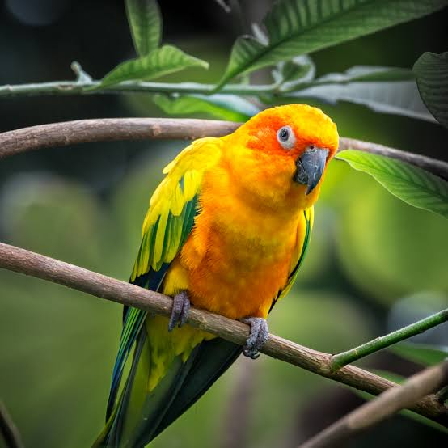
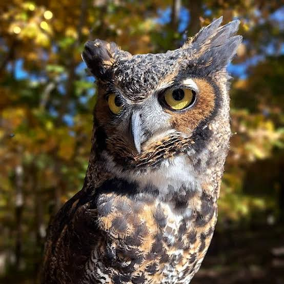
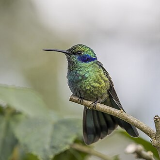

Papagal
Papagalii sunt un ordin de păsări zgomotoase și colorate, vechi din punct de vedere
evolutiv, care trăiesc în principal în regiunile tropicale și subtropicale ale lumii – Australia,
Pacific, America de Sud și Centrală. Sunt păsări cu cioc puternic curbat, poziție verticală și picioare
cu gheare. Sunt clasificate în patru familii care conțin aproximativ 410 specii din 101 genuri. În
emisfera sudică, distribuția lor se extinde până la Țara de Foc din Patagonia și Noua Zeelandă.

Bufnița
Bufnița este o denumire comună pentru păsările răpitoare de noapte din ordinul strigiforme
(Strigiformes), care cuprinde buhele, cucuvelele, huhurezii, strigile și alte păsări răpitoare de
noapte. Au un zbor silențios și un colorit protector, de obicei brun, ceea ce le ajută la prinderea
insectelor, a păsărilor și a mamiferelor mici. În repaus corpul lor are o poziție verticală. Bufnițele
au ochi globuloși așezați frontal, cioc puternic, încovoiat, văz și auz foarte bine dezvoltate.

Bufnița
Păsările colibri sunt păsări originare din America și fac parte din familia biologică Trochilidae.
Cu aproximativ 366 de specii și 113 genuri, ele sunt prezente din Alaska până în Țara de Foc, dar
cele mai multe specii se găsesc în America Centrală și de Sud. În 2024, 21 de specii de păsări
colibri sunt enumerate ca fiind pe cale de dispariție sau în pericol critic de dispariție, cu
numeroase specii în declin.